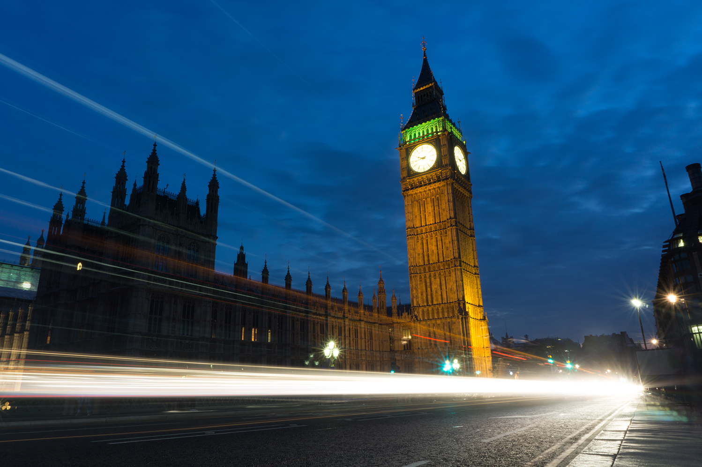
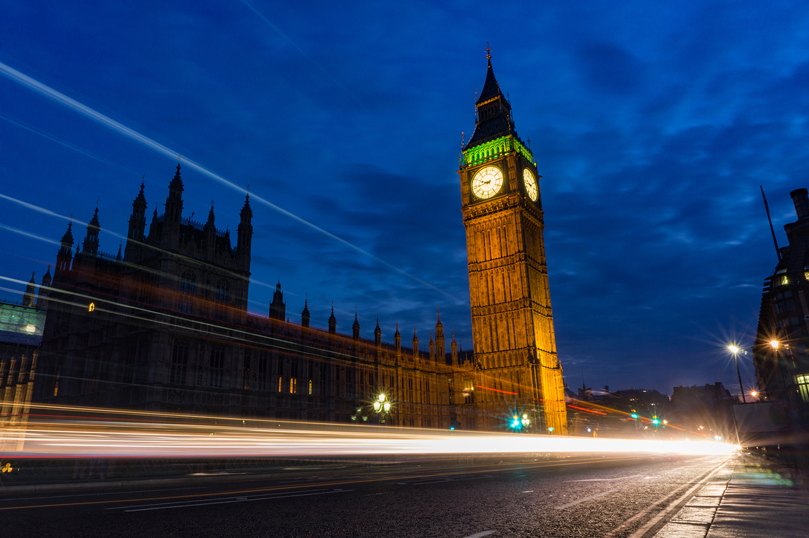
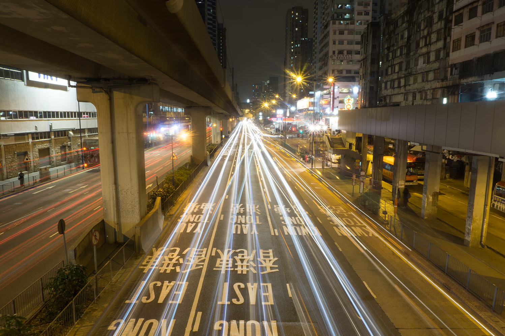
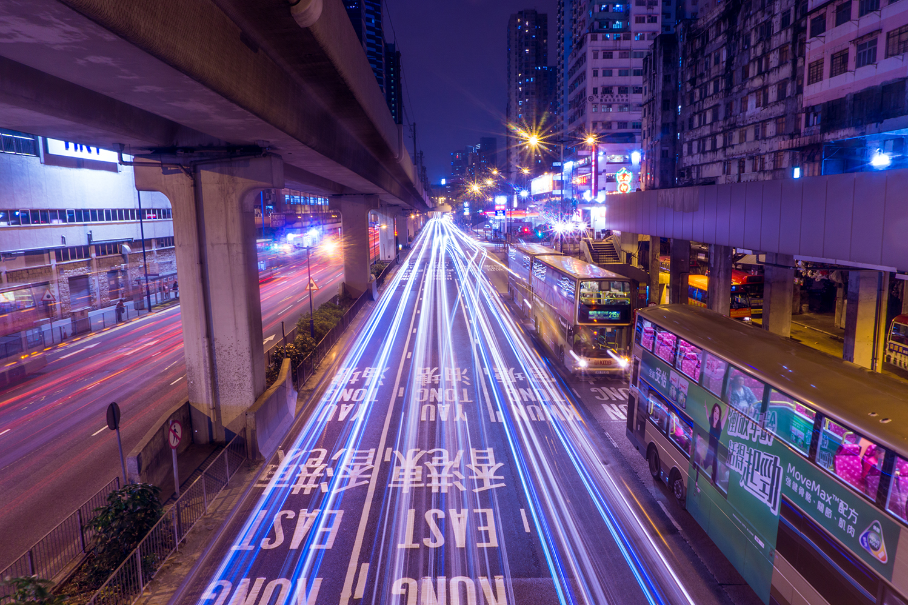

A photograph is a very popular medium of capturing a moment in time or expressing a certain feeling. In today’s digital world, so many different people have access to cameras, and it becomes hard for a photographer to differentiate himself or herself from the crowd. One of the ways photographers try to make their photos unique is by post-processing (or editing) their photos with photo editing software. Adobe Photoshop and Lightroom have become the staples for photo editing software ever since their release, and they are still the most widely used pieces of photo editing software today. With these powerful tools at the hands of so many photographers, it has helped many photographers refine their photos to their style and to look their best. However, this brings up many issues and ethical questions about the use of post-processing in photography. So, how much editing can be done to a photo to still be considered a photo as opposed to a fake one?
This issue of post-processing a photo has its origins way before the digital age of photography. It can be traced back to days of film photography. Although film photography was not the first type of photography invented, it was the first time that processing a photo was introduced. A film camera works just like a digital camera nowadays except that there is a light sensitive film at the back of the camera that is momentarily exposed to light through the lens causing the chemicals on the film to react. Then, the film is processed in a so-called darkroom. Chris Woodford, who holds a master’s degree in natural sciences with a specialization in physics from Cambridge University, explains how photographic film is developed. In short, the film is put into an acidic solution (called the developer), then neutralized in another solution (called the stop bath), and made permanent in a chemical solution known as the fixer (or hypo). After the negative is created through this process, then the colors are inversed to create the positive print onto a photograph paper using an enlarger. Now, most people have a photo lab to do this tedious process for them because they most likely do not have the proper equipment or time to do this. These photo labs would do the exact same process on many photos from many different people at a time; therefore, creating the same effect on each photo. This is akin to the auto mode on digital cameras today because it is a similar algorithm that processes the photo in camera across all cameras. However, the enthusiastic film photographers, who wanted to stand out of the crowd of “auto” processed films, developed their own film. Therefore, they were in charge of the time their film spent developing in the chemicals or the temperature of the liquids. An article that was published through the University of Vermont states that when developing film for longer or higher temperatures, “the more silver halide crystals that will be converted to metallic silver and the denser and darker the negative will be” (How Chemicals). This gives a good insight on why a slight temperature change in the liquid or a slight time change could affect the contrast, highlights, blacks, etc. of the photo. These more advanced film photographers took advantage of these chemical properties to create a different style of “processing” photos. This was the beginning of post-processing photos. One unique and popular style of processing film involved swapping the chemicals in the develop process. Typically, color negative film uses a chemical called C-41 to process it and color slide film uses E-6 chemicals to process it. However, many photographers reversed the uses by using C-41 to process color slide film and E-6 to process color negative film which is called cross-processing (What the Hell Is). This reproduced different color tones on the photo than people were typical of seeing.
The top photo is a normally edited photo, and the photo below shows the cross-processing effect. This photo was actually taken using a digital camera (opposed to a film camera). The cross-processing effect was created in Adobe Lightroom CC, but it still shows the point how film photographers tried to process their photos to be unique and different. This photo was taken by Nathaniel Young.
Another popular type of processing film actually is by using different types of film. There are different film strips that can capture slightly different color tones, more saturated colors, or greater contrast; a photographer may pick one of these depending on the style they were going for. There were different types of film including ones for more vibrant colors for landscapes and one for more true to life skin tones for portraits. Although these were not done in post-processing, it still shaped the way photographers edit their photos today. Cross-processing, different photographic film types, and many other things done by film photographers would eventually set the stage for how photos are digitally manipulated.
Film photography eventually paved the way for digital photography. Richard Trenholm, who discovered film photography through a work-experience course and now is a writer for CNET, talks about some of the history of photography. The first digital camera was created in the 1970s, but this idea of digital photographs did not really take off until the 1990s when digital cameras became more available for the general consumer market. Also in 1990, Adobe Photoshop 1.0 was released (Trenholm, Richard). This pixel based color editor was the first piece of software of its kind, and quickly gained attention from artists and photographers alike. Photoshop soon became the image editing standard because of its powerful tools and ease of access to the general public. The first versions of Photoshop ran only on the Macintosh computer by Apple; since this was a mass marketed consumer based computer, many people instantly had access to this new piece of software. It only became a matter of time before photographers realized the power of digital photography and switched from film. Rob Wood, who is an online author and photographer, stated that Photoshop “has basically replaced the darkroom as the modern way in which photographers tweak their imagery” (Wood, Rob). I fully agree that this piece of software became a way for photographers to make the transition to digital photography without losing their creative processing techniques. However, the digital age that brought new digital cameras and powerful editing software did not fundamentally change how photographers manipulated their photos; it just gave access to many photographers because it instantly became much more widely available. Today, the camera still fundamentally works the same except with a digital sensor, and photographers still manipulate and process their photos in a similar fashion. These tools now have expanded the possibilities of the photographer which brings up ethical questions of abusing the power of post-processing.
Today, the most popular photo editors are unsurprisingly Adobe Photoshop and its little brother Adobe Lightroom. There are a vase number of other photo editors, but Adobe has a very strong hold on this market. Lightroom is a raw photo editor with organization features, and Photoshop is used for more extensive retouching, masking, faking, etc. Many people have abused the power of these pieces of software in Photography, and now “Photoshop” has become a well-recognized verb. I believe that post-processing a photograph is perfectly fine, and it expresses the feelings, atmosphere, emotion, location, and style that the photographer wanted to capture. However, there is a point where too much editing changes the intent of the photo and is considered not okay.
To start, all the basic adjustments to exposure, contrast, curves, and color temperature are almost all agreed upon in the community of photographers as perfectly fine. These changes all appear natural and normal to the human eye, and thus appear real. These settings can be used to correct for the camera exposure settings (shutter speed, ISO, and aperture) so that the photo is not over or under exposed. These are all changes that would make sense which can be replicated in real life. This makes photography more practical and less time-consuming knowing that if your camera’s exposure was slightly off, that it can easily be fixed in software. Here is an example of a photo I took with minor edits:
 The top photo is the unedited photo, and the photo below is my fully edited raw file. In this photo that I took in London of Big Ben, I only made minor adjustments to the basic exposure, contrast, highlights, and shadows. In my opinion, this is a very mild edit, and perfectly acceptable in the photography community. This photo was taken by Nathaniel Young.
Nasim Mansurov, who is a professional photographer based out of Denver and recognized as a leading educator in digital photography, said that he supports many types of post-processing “as long as it looks natural at the end” (Mansurov, Nasim). The problem is that what is considered natural. I believe that making color adjustments, removing camera spots or dust, creating local adjustments, bringing up the shadows, and using split toning are all acceptable things to do. A local adjustment is when part of a photo is processed slightly differently, or otherwise known as dodge and burn. Many photographers believe that dodge and burning a photo is not acceptable because it only changes part of a photo. However, I believe that it is perfectly okay because it can bring out more details, increase the dynamic range, increase contrast, and many other things to make your photo better. Bruce Warren, who is a well published photographer in the film days, explains a post-processing technique for film called bleaching. He describes it as lightening certain parts of the photo by applying photographic bleaches with a brush (Warren 331). This is exactly where the digital technique of dodge and burn originated from. These are all part of the tools that I believe a photographer can use to create their own style. This is why photography is as much of an art form as it is a way of documenting a moment in time. Since it is an art form, it is really mostly up to the photographer to decide what is acceptable to them. The problem is whatever looks okay and natural to one photographer may be too much processing for another. An astrophotographer Jeryy Lodriguss brings up a good point that “when we take a picture we do not make a perfectly objective recording of reality. What we make is an interpretation of reality” (Lodriguss, Jerry). Every photographer sees the world not only through the camera lens, but through his or her eyes. There is no right way or view of how the world should be captured; therefore, it is up to the photographer to determine how to capture it. This not only includes how to frame and exposure the shot, but also whether the colors should look nice and vibrant or desaturated and muted. Color is a very subjective thing because it is about how the photographer’s mind’s eye sees the colors in the composition which can be completely different from another person. That is why different color correcting styles by different photographers are so unique. This all depends on the atmosphere, mood, and feelings the photographer wants to evoke through his or her photograph.
 The top photo is the unedited photo, and the photo below is my fully edited raw file. This photo taken in the Hong Kong streets, and I post-processed this photo in Adobe Lightroom CC which may be a little more than the average photographer is use to. I still do think this falls under that category of acceptable post-processing. The biggest edit I did was to change the temperature of the photo from being relatively warm with yellow lights to a more futuristic cool color tone with hints of purple. This was to recreate the atmosphere that I felt while at this location. Further more, I also used the basic exposure, contrast, curves, and split toning adjustments. This photo was taken by Nathaniel Young.
Don Norris, a photographer from California that moved to Australia and is the founder of Australia’s most popular surfing website, stated that there are some genres of photography where “a high level of manipulation aimed at producing perfection has long been the general practice” which includes fashion and product photography (Norris, Don). Even though it has been traditionally known that these fields of photography have a high level of post-processing, I think everything is okay until that photographer distorts reality by for example, changing the body appearance of a person. Ashley Brown, who has a JD with a concentration in Intellectual Property and has worked with many prestigious companies in the fashion industry, wrote in her article that Photoshop has given the ability to turn a photo of an average looking model into a “Barbie girl, in Barbie world” (Brown 97). She goes on to say that creating a fake idealistic photograph of a model creates an illusion of reality which is not acceptable in fashion photography. In certain fields of photography, like journalism, the rules are must stricter. Journalistic photography is much stricter because it plays an important role in documenting history. The New York Times writer, David Campbell, argues that crushing the black levels or cropping a photograph is breaking the ethics of photography because these can hide or get rid of something that was captured (Campbell, David). This is a very extreme view of photography, and even in photojournalism is a minority view. I believe a photographer can have a certain style to their photographs, and certainly that changing the black levels to increase the overall photo’s contrast is entirely okay. Also, I believe that cropping a photo is perfectly okay, especially to create a better composition; however, in photojournalism, it can be seen as cutting out something. The writer of the article about the ethics of photo editing in photojournalism holds a less strict view of post-processing compared to David Campbell’s view. This writer states that color correcting, cropping, exposure compensation, eliminating irrelevant material, and even local adjustments all are okay in the context of photojournalism if the impact is the make the photo more true to life (Ethically Editing). I agree more closely with the second writer because these small edits can serve to set the photographer apart from the “auto” processed photos from everyone else. Therefore, as long as the subject of the photo stays the same, and nothing important is cut out of the photo (including masking) in this context of journalism, then I think it is okay.
Finally, digital compositions from multiple photographs from different locations is not accepted within this photography community. There is a time and place for digital compositions in Photoshop (which is how Photoshop became a verb), but it is not inside the community of photography. Digital manipulations express and create something that is explicitly not possible in real life, and try to create a fantasy photo. These digital compositions definitely are accepted and are very popular in the art community.
Photographers will always continue to post-process their photographs whether other people are against it or not. The motivation for a photographer to continue to edit their photos will always be to improve their photo to be the best it can be while distinguishing themselves from the crowd of other photographers. It will always be a blurred line between the aesthetics of a photo and the ethics of editing it. Every photographer wants their image to be aesthetically pleasing, and since there is no technical limit to what can be done to a photo, there will always be an ethical boundary. This will always continue to be an on going issue because people will continue to abuse the power of Photoshop in photography. However, since the amount of post-processing on a photo is all subjective to the photographer, this issue will almost certainly never be resolved. Every photographer is going to see and depict a scene slightly differently, and that is why so many people are drawn to this diverse community to inspire and to be inspired.
Work Cited
Brown, Ashley. "Picture [Im]Perfect: Photoshop Redefining Beauty in Cosmetic Advertisements, Giving False Advertising a Run for the Money." Texas Review of Entertainment & Sports Law, vol. 16, no. 2, Spring2015, pp. 87-105. EBSCOhost, search.ebscohost.com/login.aspx?direct=true&db=aph&AN=108802574&site=ehost-live.
Campbell, David. “Debating the Rules and Ethics of Digital Photojournalism.” The New York Times, 17 Feb. 2015, lens.blogs.nytimes.com/2015/02/17/world-press-photo-manipulation-ethics-of-digital-photojournalism/?_r=0. Accessed 2 Mar. 2017.
"Ethically Editing News Photos Digitally." USA Today Magazine, vol. 130, no. 2683, Apr. 2002, p. 15. EBSCOhost, search.ebscohost.com/login.aspx?direct=true&db=ulh&AN=6466563&site=ehost-live.
“How Chemicals Affect Film.” Developing the Negative, pp. 94–97., www.uvm.edu/~artdept/photoweb/files/Processing_Info.pdf. Accessed 9 Mar. 2017.
Lodriguss, Jerry. “The Ethics of Digital Manipulation.” The Ethics of Digital Manipulation, www.astropix.com/HTML/J_DIGIT/ETHICS.HTM. Accessed 22 Feb. 2017.
Mansurov, Nasim. “The Importance of Ethics in Photography.” Photography Life, 5 Feb. 2016, photographylife.com/the-importance-of-ethics-in-photography. Accessed 22 Feb. 2017.
Norris, Don. “Ethics and Editing.” Photo Review, Jan. 2012, www.photoreview.com.au/tips/editing/ethics-and-editing. Accessed 2 Mar. 2017.
Trenholm, Richard. “Photos: The History of the Digital Camera.” CNET, 2 Nov. 2007, www.cnet.com/news/photos-the-history-of-the-digital-camera/. Accessed 9 Mar. 2017.
Warren, Bruce. “Special Techniques.” Photography, West Publishing Company, St. Paul, MN, 1993, pp. 299–336.
“What the Hell Is Cross-Processing?” Cross-Processing, crossprocessing.info/. Accessed 9 Mar. 2017.
Wood, Rob. “When Photographers Attack: The 7 Most Controversial Issues in Photography Today.” Light Stalking, 7 Jan. 2014, www.lightstalking.com/photographers-attack-7-controversial-issues-photography-today/. Accessed 22 Feb. 2017.
Woodford, Chris. “Film Cameras and 35mm Photography.” Explain That Stuff, 25 Sept. 2016, www.explainthatstuff.com/how-film-cameras-work.html. Accessed 9 Mar. 2017.